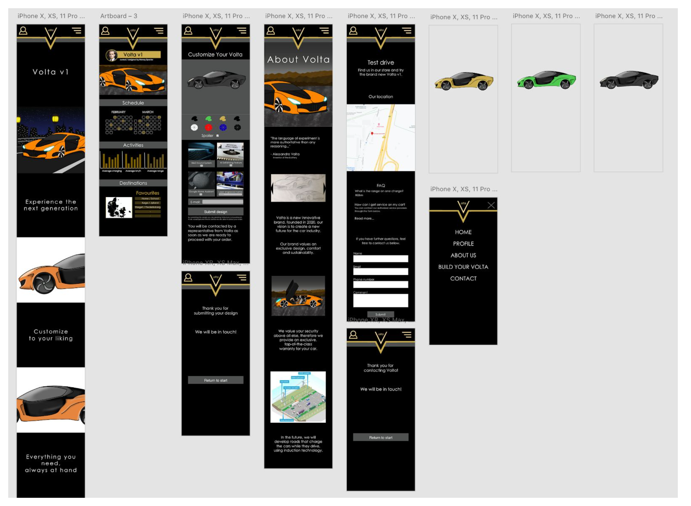
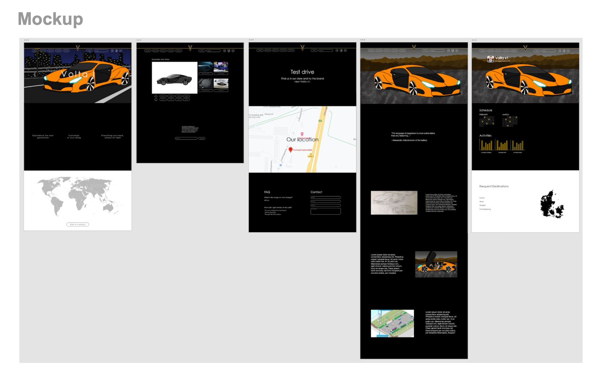

Denne hjemmeside er det nyeste skud på stammen, da det er den nyeste jeg har lavet. Her syntes jeg for alvor at det begynder at ligne noget, og det har også taget sin tid at lave. Den fungere både til mobil og til desktop og er dermed responsivt. Det er klart den hjemmeside jeg er mest stolt af, af de tre jeg hidtil har lavet. Det har været en god proces hele vejen igennem og ikke mindst et godt samarbejde.
Detaljer
Det er et 4-ugers temaforløb der består af to gange to uger. I
første del af projektet fokuserede vi på at udarbejde et koncept og
udvikle en salgsplatform. Vi har udviklet et koncept som vedrører
branding af biler. Vi har været kreativ i vores fremgangsmetode.
Hvordan og hvem vi har ville udvikle konceptet til og for - var op
til os selv. I anden del skulle der videreudvikles på
forretningskonceptet og udvikles indhold, så man kan markedsføre
vores brand/koncept på de sociale medier.
Projekt
Del 1: Prototype i HTML og CSS (mobile) Design Thinking processen
Forretningsmodel (BMC) Wireframes og mockups I Adobe XD Personas
Usability test Brugerscenarier Brugertests
Del 2:
Indholdskalender og strategi Prototype i HTML og CSS (desktop)
Forbedret forretningsmodel (BMC) Content Plan
Klient
Del 1: Volta - Bilfabrikant
Del 2: Volta - Bilfabrikant
Dato
Del 1: Torsdag d. 29. Oktober 2020
Del 2: Torsdag d. 26.
November 2020


Inden vi gav os i kast med at kode vores hjemmeside, lavede vi selvfølgelig sketchen over hjemmesiden og ikke mindst vores mockups, som ses her. Her ses det tydeligt at vores kompetencer og ambitionsniveau er steget og det er endt ud i et gennemarbejdet mockup. Det er en tro kopi af vores mobilversion af hjemmesiden og så fungere den som var det en rigtig hjemmesiden

Dette er vores mockup af vores desktop version, hvor dem er optimeret til desktop, men den er også blevet forbedret designmæssigt og er blevet gjort mere eksklusiv. Den er ligeleds lavet som man kan navigere rundt på siden så man får en fornemelse af hvordan hjemmesiden virker.

Til denne opgaver har vi naturligvis også lavet et moodboard, der er blevet betydligt bedre taget de forrige moodboards i mente. Den er blevet langt bedre design mæssigt, og så er den blevet mere målrettet og rammer målgruppen bedre.